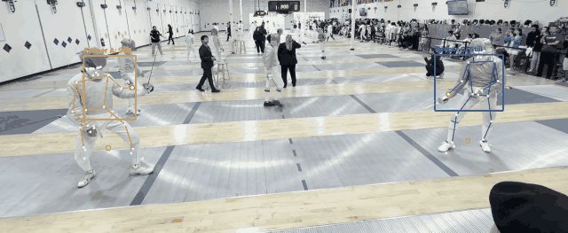

Track two fencers through competition video. Pick them once, and it follows them, writes out an annotated clip and a CSV of positions and speeds, and tells you when it has lost them.
An open source computer vision project by Matthew Wang. Python and OpenCV.

A real bout from a Portland C2 competition. Orange and blue boxes hold each fencer's identity, the stick figures are body landmarks, red marks the sword hand and yellow marks the feet.
I fence sabre and I film a lot of my bouts. I wanted something that could follow both fencers automatically so I could pull numbers out of the footage instead of scrubbing through it by hand.
The hard part turned out not to be following a fencer. It was knowing when the tracker had stopped following the right one.
I built a benchmark from five segments across four competitions, chosen to be difficult: fencers between 100 and 450 pixels tall, one clip at 960x544, heavy motion blur, hand held panning, and a back wall covered in large photographs of other fencers.
My first version kept only 5 of 10 fencer tracks on the right person. Every single failure landed on the same kind of thing, and none of them reported a problem.
| Case | What the box ended up on |
|---|---|
| portland-fleche A | a referee standing still |
| seattle-lowres B | a spectator's dark hair |
| sf-blur-posters A | the ceiling edge |
| sf-blur-posters B | the scoreboard |
| cincy-pan-blur A | a sponsor banner |
Banners, scoreboards and ceiling edges are static and high contrast, and a template tracker prefers them to a blurred fencer mid lunge. All five reported success the entire time, which is worse than failing.
I am listing these because they are the reason there is one automatic check in the code instead of five.
| Idea | Why it failed |
|---|---|
| Cap how far a box may jump per frame | A correct box during a lunge jumped 0.284 times its own height. The drifting box jumped 0.356. The other drift jumped 0.194, less than the correct lunge. |
| Compare tracker motion against optical flow | Correct tracking during a blurry lunge disagreed by 116px. A real drift disagreed by 157px. |
| Make the tracker give up sooner | At one threshold nothing changed. At the next it declared failure at frame 30, in the middle of a good lunge. |
| Use pose confidence as a warning | It stayed above 0.97 the whole time a box tracked the wrong people, because those people are real bodies. |
None of them separated a real drift from a real lunge. Tuning was not the answer.
A person detector runs every frame. A fencer's box has to contain a detected body, or that fencer is declared lost. A box cannot drift onto a banner because a banner is not a person.
The detector does report the printed fencers on the venue's wall posters as people, on 15% of frames. They never get tracked, because a detection also has to overlap the fencer's box, continue their motion, and not already be claimed.
Two fencers in identical kit passing each other look the same. They are carrying momentum in opposite directions though, so the body still travelling right is still Fencer A.
A detected person can be claimed by at most one fencer, so both boxes can never collapse onto the same body.
Slide, rotation and zoom are measured and subtracted before any fencer movement is calculated. One test clip drifted 9.2% in zoom alone.
| Before | After | |
|---|---|---|
| Peak overlap between the two boxes | collapsed onto one person | 0.24, never merged |
| Fencer A at the end | silently tracking a referee | declared lost |
| Identity through the pass | close to a coin flip | both boxes on the correct fencers |
Four of the five original failures are now flagged instead of silent.
I measured the filming conditions of every test clip frame by frame and lined them up against what happened. One clip tracked both fencers cleanly, and it is also the only one filmed with a pan under 10 px/s and no zoom.
| Clip | Pan speed | Zoom drift | Result |
|---|---|---|---|
| Portland, steady | 5.5 px/s | 0.1% | both tracked |
| Portland, fleche | 40.6 px/s | 12.2% | A lost late |
| Seattle D2 | 41.6 px/s | 0.1% | B drifted onto a spectator |
| SF AFM | 93.6 px/s | 7.5% | both failed |
One surprise: resolution is not the bottleneck. The Seattle clip is only 960x544 and the detector still found the fencers on 100% of frames, the best score of any clip. The full guide is in FILMING.md.
git clone https://github.com/matthewyongenwang-coder/riposte.git
cd riposte
python3 -m venv venv && source venv/bin/activate
pip install -r requirements.txt
python3 get_models.pyThen either open the local web page, where you drop in a clip, scrub to the action and drag a box around each fencer:
python3 webapp.pyOr run it from the terminal:
python3 main.py "bout.MOV" --detect --poseTwo pip packages. The pretrained models are fetched at setup and none of them were trained by this project. It runs entirely on your own computer, with no accounts and nothing uploaded anywhere.
It ran the tracking in JavaScript so you could use it with no install at all. To do that it had to drop the CSRT tracker, which has no browser equivalent, and cut the camera correction down to sliding only, because doing it properly means shipping 8MB of OpenCV.js.
Neither cut is small. On the panning Portland clip the camera rotates 1.01 degrees and zooms 1.0924x, and a sliding-only correction ignores both of those. So the browser version was quietly less accurate than the Python one on exactly the footage that is hardest, and nothing in the repo could have told me by how much, because the two versions shared no tests.
Two implementations of one algorithm in two languages drift apart, and the copy is the one that loses. I would rather have one engine I can measure than two I have to trust. There is now a golden trace per benchmark case and a single command that says whether behaviour moved, which is what I should have built before writing a second version.
One measurement from it is worth keeping. I first shipped it with a smaller detector because it loads in half a second instead of downloading 36MB. Over 221 frames of the fleche clip that was a bad trade:
| Detector | People found per frame | Frames a fencer was lost |
|---|---|---|
| Small (EfficientDet-Lite0) | 6.0 | 94 |
| YOLOX, same as Python | 12.9 | 6 |
The small one was finding half as many people, so it was simply missing fencers. Detector size is not somewhere to save load time.